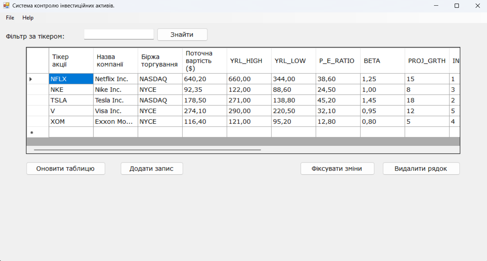

Робота з клієнтським інтерфейсом
Додаток дозволяє керувати реєстрами за допомогою навігаційних кнопок:

- Кнопка Додати: створює чистий слот у локальній таблиці.
- Кнопка Фіксувати зміни: відправляє пакет даних на обробку серверу.
Повернутися на головну